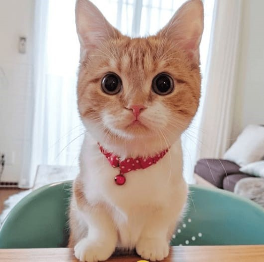

Bienvenido a nuestra asociacion de adopata a un peludo, tendras la oportunidad de hacer feliz a uno de nuestros peluditos que estan esperando de tu cariño y amor. Cuando llegues a tu casa, no te importara lo cansado o malhumorado que te encuentres, ya que ellos tienen la capacidad de hacerte sentir mejor y olvidarte por un momento de todos tus problemas, con tan solo mover su colita ellos podran sacarte una sonrisa. Para que comprar una mascota si nuestros peluditos estan a la espera de un hogar y una familia, cuando menos te lo esperes, veras la magia que ellos entregaran a tu hogar.
 Gatos